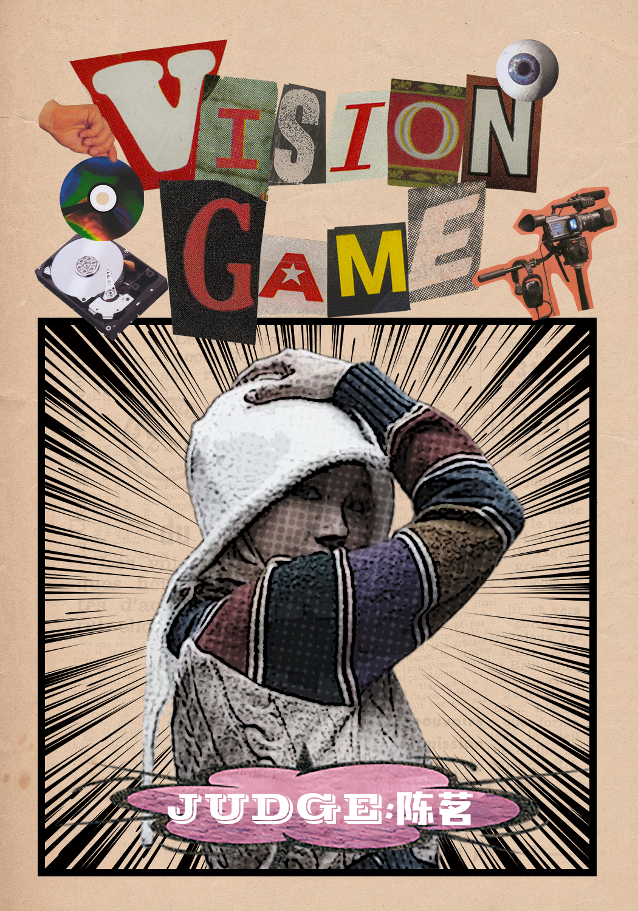
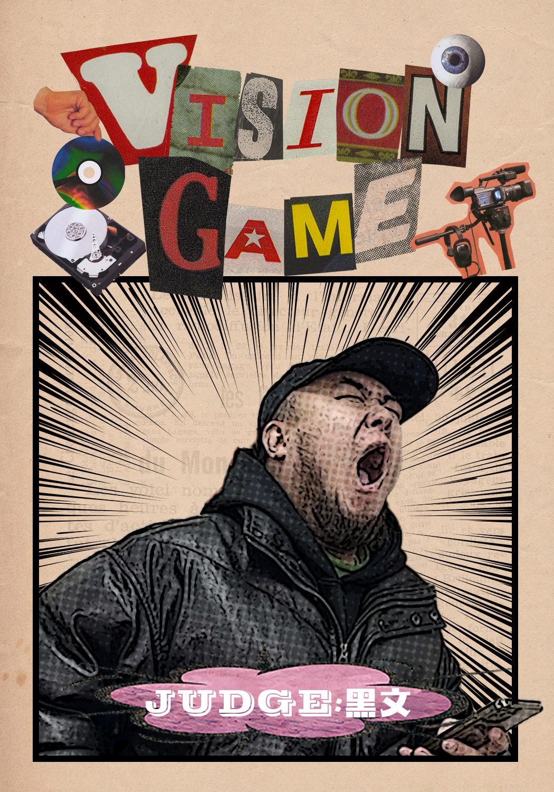
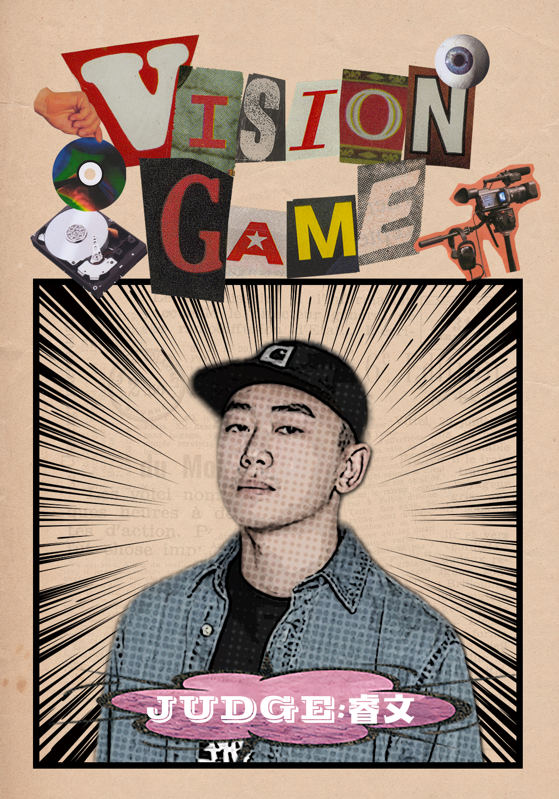
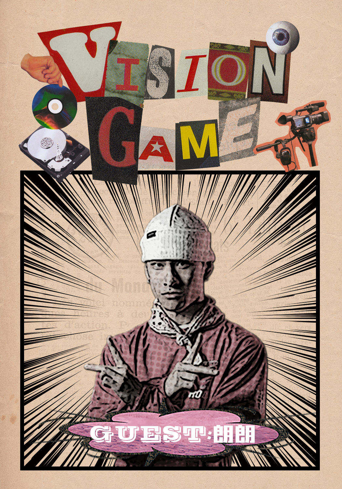
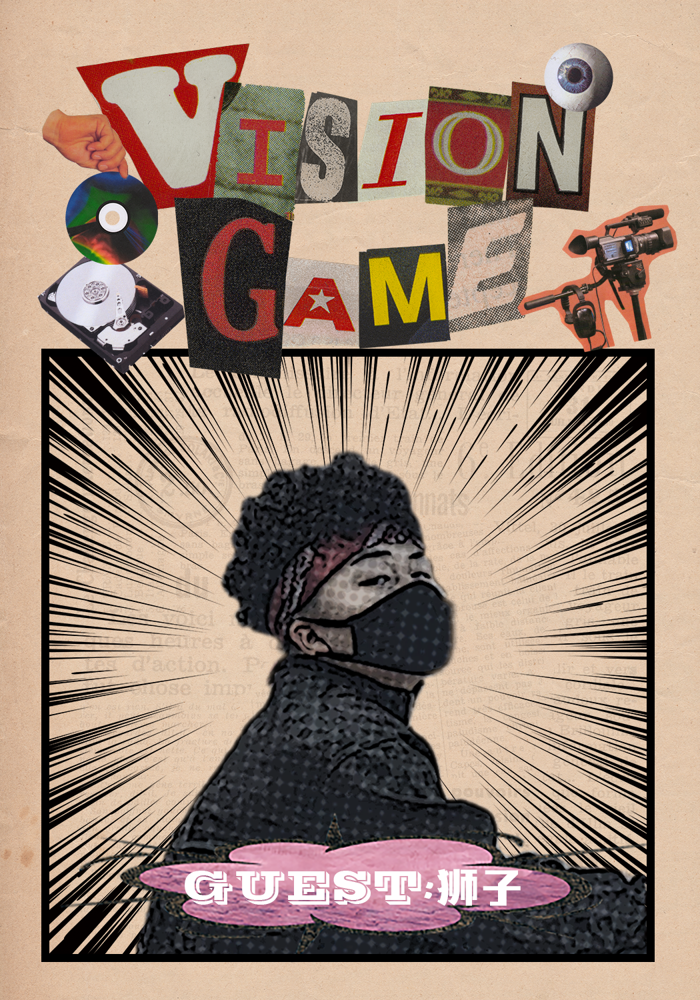
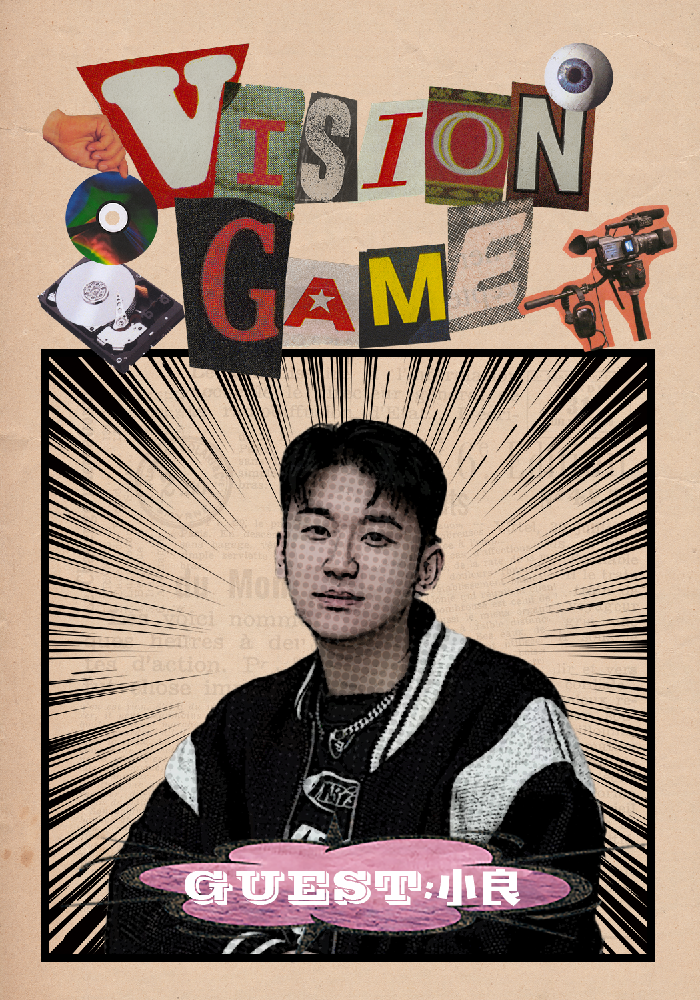
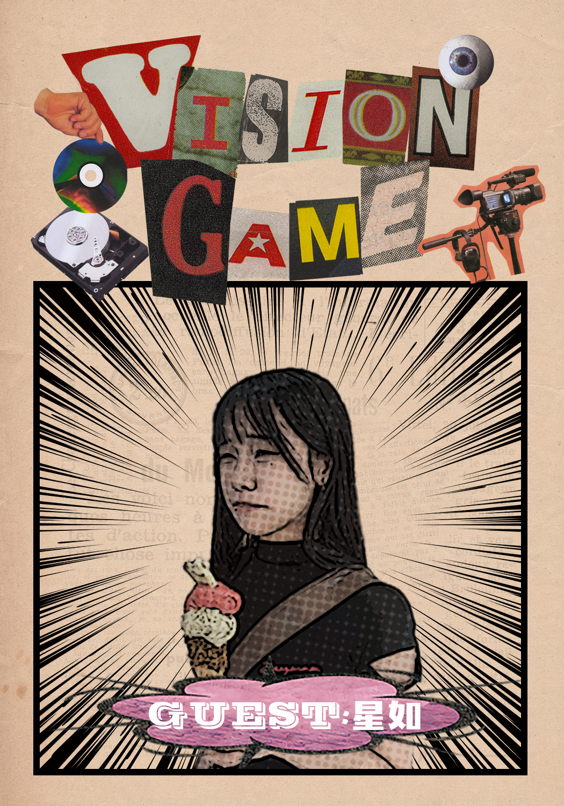
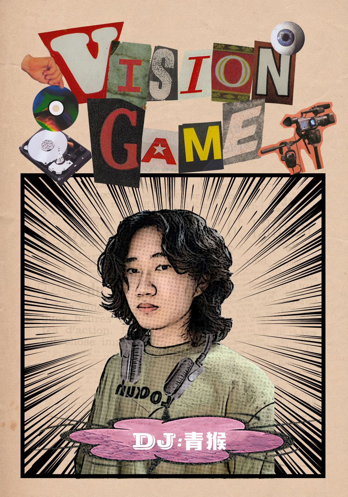
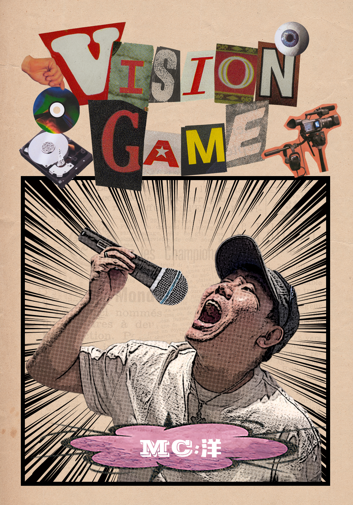
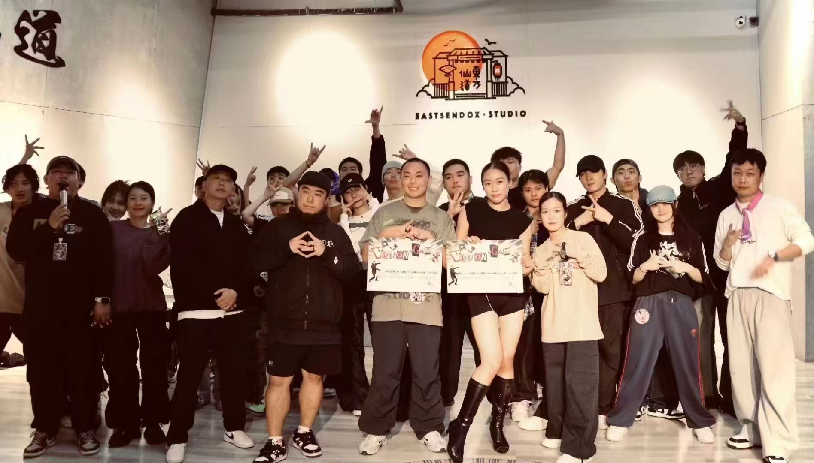

2024 · Shenyang, China · Community battle event
Vision Game
A playful visual system for a street-dance battle built around participation, surprise and scene energy.
Planned the participant flow and produced the complete promotional and event material system.
The event needed to attract street-dance enthusiasts while remaining legible to first-time spectators.
The event later led to inquiries from shopping malls about hosting battles and repeat poster commissions.
Creative approach
Turn the event information into part of the game.
I used collage, cut-out portraits, halftone textures, comic-style burst lines and mixed typography to make the communication feel playful rather than institutional. The same visual language organised the event details, judge and guest roles, and the physical medal.
The poster was designed to live naturally inside a social feed, where the event identity, line-up and call to action had to be understood in one quick glance.

Material system
One collage language, carried by real objects.
The poster established the tone. Judge cards, guest cards, DJ and MC cards, and medals extended the same playful competition language into the event itself.











Judge / guest / DJ / MC / medal cards

In the room
The system worked beyond the screen.
Approximately 50–60 people registered and more than 80 people attended on site. The project later led to inquiries from shopping malls about hosting battles, as well as repeat poster commissions from people in the scene.
Reflection
The useful part was not only making the poster. It was making the event easier to understand, join and remember.
This project is a compact example of how cultural observation, visual direction and event communication worked together in a real street-dance event. The same visual language connected the announcement, participant roles, physical materials and the live experience.